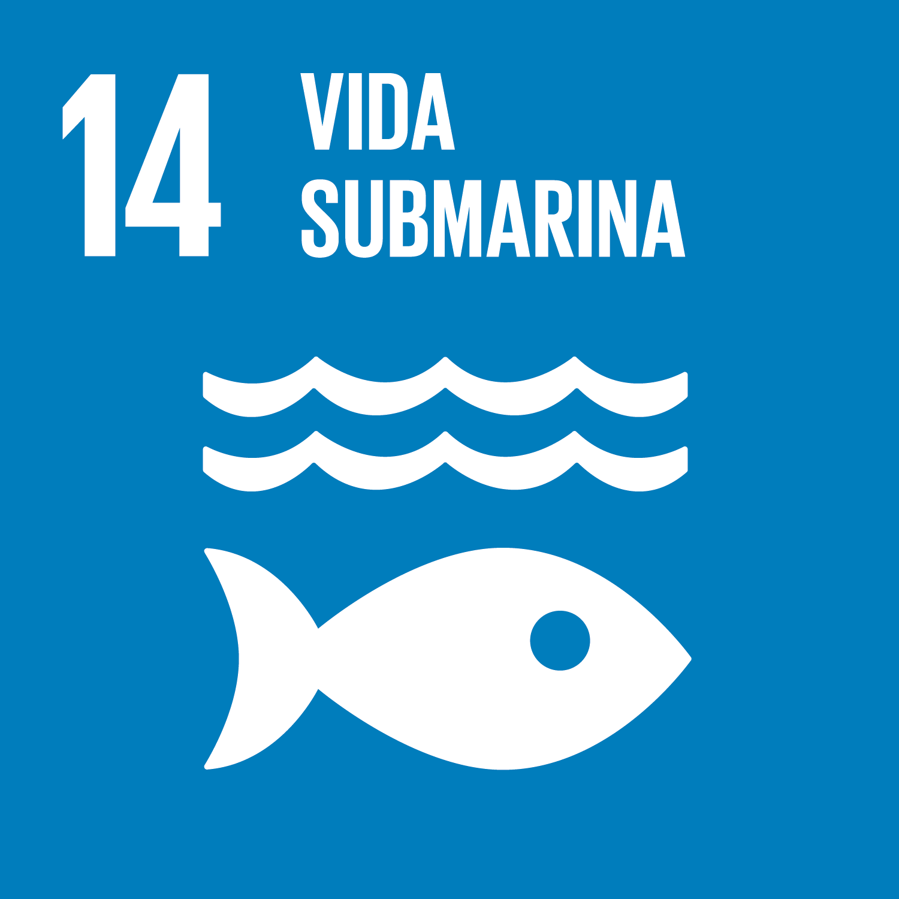

¿Qué es el ODS 14?
El Objetivo de Desarrollo Sostenible 14 busca conservar y utilizar sosteniblemente los océanos, mares y recursos marinos para el desarrollo sostenible.
Los océanos son el mayor ecosistema del planeta, regulan el clima y producen oxígeno. Sin embargo, enfrentan graves amenazas como la contaminación, la sobrepesca y la acidificación.